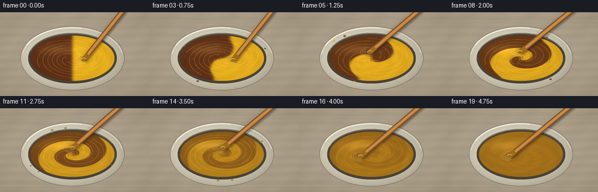
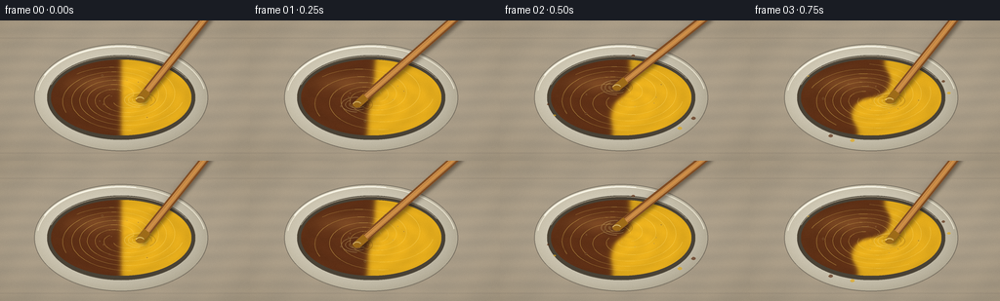

CODING AGENTS AS PIXEL WORLD MODELS
traex/GPT-5.6-Sol · material_0005
点击播放 · 原生 RGB 像素
逐轮保存的候选
回放视频、检查图与代码变化。
每份候选均可单独播放。实际图片检查记录在下方工具轨迹中。
候选 01播放与检查图
点击播放 · 原生 RGB 像素


展开代码变化
--- 上一保存版本
+++ 本次保存版本
@@ -0,0 +1,262 @@
+from pathlib import Path
+import math
+import numpy as np
+from PIL import Image, ImageDraw, ImageFilter
+import artifact_io
+
+# Procedural RGB video: vigorous mixing of equal brown and yellow paint.
+ROOT = Path(__file__).resolve().parent
+W, H, N = 256, 144, 20
+S = 4
+WW, HH = W*S, H*S
+rng = np.random.default_rng(1729)
+
+# High resolution coordinate grids for antialiasing.
+yy, xx = np.mgrid[0:HH, 0:WW].astype(np.float32)
+x = xx / S
+y = yy / S
+cx, cy = 124.0, 79.0
+
+# Fixed fine-grained studio/table texture (fully procedural).
+noise_small = rng.normal(0, 1, (H, W)).astype(np.float32)
+noise_im = Image.fromarray(np.uint8(np.clip(noise_small * 30 + 128, 0, 255))).resize((WW, HH), Image.Resampling.BICUBIC).filter(ImageFilter.GaussianBlur(3*S))
+coarse_noise = (np.asarray(noise_im, dtype=np.float32) - 128) / 30
+fine_noise = rng.normal(0, 1, (HH, WW)).astype(np.float32)
+
+# Fixed micro texture for paint.
+paint_noise = rng.normal(0, 1, (HH, WW)).astype(np.float32)
+paint_noise_img = Image.fromarray(np.uint8(np.clip(paint_noise*28+128, 0, 255))).filter(ImageFilter.GaussianBlur(0.8*S))
+paint_noise = (np.asarray(paint_noise_img, dtype=np.float32)-128)/28
+
+YELLOW = np.array([224., 169., 28.])
+BROWN = np.array([92., 47., 22.])
+BLEND = (YELLOW + BROWN) / 2
+
+
+def smoothstep(a, b, z):
+ q = np.clip((z-a)/(b-a), 0, 1)
+ return q*q*(3-2*q)
+
+
+def ellipse_box(cxx, cyy, rx, ry):
+ return tuple(int(v*S) for v in (cxx-rx, cyy-ry, cxx+rx, cyy+ry))
+
+
+def add_table(base, frame_i):
+ # Warm neutral workbench with horizontal brushed grain and subtle plank seams.
+ grain = (3.1*np.sin(y*0.43 + 0.45*np.sin(x*0.055)) +
+ 1.8*np.sin(x*0.12 + y*0.10) + 1.4*coarse_noise + 0.75*fine_noise)
+ vignette = -8.0*((x-W/2)**2/(W/2)**2 + (y-H/2)**2/(H/2)**2)
+ base[..., 0] = 174 + grain + vignette
+ base[..., 1] = 161 + grain*0.78 + vignette
+ base[..., 2] = 140 + grain*0.52 + vignette
+ # Hairline seams of a practical wooden work surface.
+ for seam in (18, 136):
+ d = np.abs(y-seam)
+ base[..., 0] -= 9*np.exp(-(d/0.75)**2)
+ base[..., 1] -= 8*np.exp(-(d/0.75)**2)
+ base[..., 2] -= 6*np.exp(-(d/0.75)**2)
+
+
+def paint_composition(t, u, v, r, th):
+ # Inverse flow map of a stirred viscous fluid. Initially this is a clean
+ # 50/50 vertical divide; radial differential rotation pulls it into spirals.
+ twist = 10.8 * smoothstep(0.0, 0.72, t)
+ th0 = th - twist*(1-np.clip(r,0,1))**1.48 - 1.20*t*np.clip(r,0,1)
+ source_x = r*np.cos(th0)
+ # Folding and lobe perturbations emulate repeated vigorous stirring.
+ source_x += (0.055*np.sin(5*th0 + 15*r - 13*t) +
+ 0.025*np.sin(11*th0 - 19*r + 22*t))*smoothstep(.05,.55,t)
+ sharpness = 24 - 8*smoothstep(.20,.90,t)
+ raw = 0.5 - 0.5*np.tanh(source_x*sharpness) # brown fraction
+ # Pigment contrast remains during marbling, then rapidly converges to equal blend.
+ amplitude = 1.0 - smoothstep(.38, .96, t)
+ amplitude *= 1.0 - 0.12*smoothstep(.10,.35,t)
+ comp = 0.5 + amplitude*(raw-0.5)
+ # Fine trailing filaments, also fading into the final homogeneous ochre.
+ filament = np.sin(15*th0 + 25*r - 28*t) * np.exp(-((r-.46)/.42)**2)
+ comp += 0.025*filament*amplitude*smoothstep(.15,.5,t)
+ return np.clip(comp, 0, 1)
+
+
+def draw_splashes(im, i, phase, t):
+ # Small, temporally varying drops convey energetic stirring without clutter.
+ if i < 2 or i > 15:
+ return
+ layer = Image.new('RGBA', im.size, (0,0,0,0))
+ d = ImageDraw.Draw(layer)
+ count = 3 + (i % 4)
+ for k in range(count):
+ a = phase*1.37 + k*2.19 + i*0.31
+ rad = 76 + 4*((i+k)%3)
+ px = cx + rad*math.cos(a)
+ py = cy + .54*rad*math.sin(a)
+ if not (3 < px < W-3 and 3 < py < H-3):
+ continue
+ rr = (0.75 + 0.38*((k+i)%3))*S
+ mixed = BLEND if t > .55 else (YELLOW if (k+i)%2 else BROWN)
+ col = tuple(int(z) for z in mixed) + (180,)
+ box = (int(px*S-rr*1.5), int(py*S-rr), int(px*S+rr*1.5), int(py*S+rr))
+ d.ellipse(box, fill=col)
+ d.ellipse((box[0],box[1],box[0]+max(1,int(rr*.6)),box[1]+max(1,int(rr*.5))), fill=(255,239,182,110))
+ im.alpha_composite(layer)
+
+
+def draw_surface_details(im, i, t, phase, tip):
+ # Clipped arcs and bubbles on the paint surface.
+ layer = Image.new('RGBA', im.size, (0,0,0,0))
+ d = ImageDraw.Draw(layer)
+ mask = Image.new('L', im.size, 0)
+ md = ImageDraw.Draw(mask)
+ md.ellipse(ellipse_box(cx, cy, 71, 38.5), fill=255)
+
+ # Multiple spiral ridges follow the stirred flow; by the end they are subtle.
+ ridge_alpha = int(95*(1-smoothstep(.68,.98,t)) + 18)
+ for j in range(5):
+ pts=[]
+ for q in np.linspace(0.18, .92, 85):
+ ang = phase*.12 + j*1.26 + 8.2*(1-q) + .55*math.sin(5*q+phase)
+ px = cx + q*69*math.cos(ang)
+ py = cy + q*37*math.sin(ang)
+ pts.append((int(px*S),int(py*S)))
+ d.line(pts, fill=(255,220,104,ridge_alpha), width=max(1,int(.55*S)), joint='curve')
+ # Tight wake crescents around the submerged tip.
+ tx, ty = tip
+ for j in range(3):
+ rr = (8+j*4)*S
+ box = (int(tx*S-rr), int(ty*S-rr*.48), int(tx*S+rr), int(ty*S+rr*.48))
+ d.arc(box, 20+35*j, 205+35*j, fill=(255,235,156,105), width=max(1,int(.65*S)))
+ d.arc(box, 205+35*j, 340+35*j, fill=(66,37,18,75), width=max(1,int(.50*S)))
+
+ # Air bubbles created during energetic mixing.
+ for k in range(11):
+ a = k*2.399 + phase*.33
+ rr0 = 10 + (k*13 % 52)
+ bx = cx + rr0*math.cos(a)
+ by = cy + .50*rr0*math.sin(a)
+ br = (.35 + (k%4)*.18)*S
+ d.ellipse((int(bx*S-br),int(by*S-br),int(bx*S+br),int(by*S+br)),
+ fill=(66,38,17,62), outline=(255,230,154,105), width=max(1,int(.25*S)))
+ layer.putalpha(Image.composite(layer.getchannel('A'), Image.new('L',im.size,0), mask))
+ im.alpha_composite(layer)
+
+
+def handle_points(tip, anchor, halfw):
+ x1,y1=tip; x2,y2=anchor
+ dx,dy=x2-x1,y2-y1
+ ln=math.hypot(dx,dy); nx=-dy/ln*halfw; ny=dx/ln*halfw
+ return [(int((x1+nx)*S),int((y1+ny)*S)),(int((x2+nx)*S),int((y2+ny)*S)),
+ (int((x2-nx)*S),int((y2-ny)*S)),(int((x1-nx)*S),int((y1-ny)*S))]
+
+
+def draw_stirrer(im, i, phase, tip):
+ anchor=(216 + 3*math.sin(phase*.47), -10)
+ # Soft motion traces of prior positions make the rapid circular action legible.
+ blur = Image.new('RGBA', im.size, (0,0,0,0)); bd=ImageDraw.Draw(blur)
+ for j,alpha in [(3,16),(2,24),(1,34)]:
+ pp=phase-j*.24
+ old=(cx+20*math.cos(pp), cy+10.5*math.sin(pp))
+ bd.line([(int(old[0]*S),int(old[1]*S)),(int(anchor[0]*S),int(anchor[1]*S))],
+ fill=(96,61,34,alpha),width=8*S)
+ blur=blur.filter(ImageFilter.GaussianBlur(2.1*S))
+ im.alpha_composite(blur)
+
+ # Contact shadow, then a warm wooden mixing stick with edge and highlight.
+ sh=Image.new('RGBA', im.size,(0,0,0,0)); sd=ImageDraw.Draw(sh)
+ sd.polygon(handle_points((tip[0]+1.6,tip[1]+2.3),(anchor[0]+1.6,anchor[1]+2.3),4.5),fill=(31,20,10,105))
+ sh=sh.filter(ImageFilter.GaussianBlur(1.7*S)); im.alpha_composite(sh)
+
+ lay=Image.new('RGBA',im.size,(0,0,0,0)); d=ImageDraw.Draw(lay)
+ d.polygon(handle_points(tip,anchor,4.2),fill=(128,76,35,255))
+ d.line([(int(tip[0]*S),int(tip[1]*S)),(int(anchor[0]*S),int(anchor[1]*S))],fill=(207,143,72,255),width=5*S)
+ # Fine wood grain.
+ for offset,alpha in [(-1.4,100),(1.6,80)]:
+ x1,y1=tip; x2,y2=anchor; dx=x2-x1;dy=y2-y1;ln=math.hypot(dx,dy);nx=-dy/ln;ny=dx/ln
+ d.line([(int((x1+nx*offset)*S),int((y1+ny*offset)*S)),(int((x2+nx*offset)*S),int((y2+ny*offset)*S))],
+ fill=(88,48,23,alpha),width=max(1,int(.42*S)))
+ # Paint-coated submerged tip.
+ dx=anchor[0]-tip[0];dy=anchor[1]-tip[1];ln=math.hypot(dx,dy)
+ coat_end=(tip[0]+dx/ln*12,tip[1]+dy/ln*12)
+ coat=tuple(int(z) for z in BLEND)
+ d.line([(int(tip[0]*S),int(tip[1]*S)),(int(coat_end[0]*S),int(coat_end[1]*S))],fill=coat+(255,),width=8*S)
+ d.ellipse((int((tip[0]-4.5)*S),int((tip[1]-3.1)*S),int((tip[0]+4.5)*S),int((tip[1]+3.1)*S)),fill=coat+(245,))
+ d.arc((int((tip[0]-4.5)*S),int((tip[1]-3.1)*S),int((tip[0]+4.5)*S),int((tip[1]+3.1)*S)),190,340,fill=(255,225,138,190),width=max(1,S))
+ im.alpha_composite(lay)
+
+
+def make_frame(i):
+ t=i/(N-1)
+ phase=0.25 + i*2.12 # large inter-frame displacement: vigorous stirring
+ tip=(cx+20*math.cos(phase), cy+10.5*math.sin(phase))
+ base=np.zeros((HH,WW,3),dtype=np.float32)
+ add_table(base,i)
+
+ # Soft cast shadow beneath bowl.
+ sh=((x-(cx+2))/94)**2+((y-(cy+6))/53)**2
+ alpha=np.clip(1-sh,0,1)**2*.34
+ base*=1-alpha[...,None]
+
+ qout=((x-cx)/89)**2+((y-cy)/55)**2
+ qinner=((x-cx)/76)**2+((y-cy)/43.5)**2
+ out=qout<=1
+ # Hand-glazed ivory ceramic bowl: directional gradients and subtle speckle.
+ edge=np.sqrt(np.clip(qout,0,1))
+ ceramic=np.empty_like(base)
+ directional=9*(-(x-cx)/89) + 7*(-(y-cy)/55)
+ ceramic[...,0]=210+directional+2*fine_noise-22*edge**4
+ ceramic[...,1]=204+directional+1.7*fine_noise-24*edge**4
+ ceramic[...,2]=186+directional+1.2*fine_noise-27*edge**4
+ base[out]=ceramic[out]
+
+ # Dark inner well immediately beneath the paint/rim.
+ well=(qinner<=1)
+ wellcol=np.stack([np.full_like(x,73),np.full_like(x,66),np.full_like(x,54)],axis=-1)
+ base[well]=wellcol[well]
+
+ # Viscous paint field.
+ rx,ry=72.,39.
+ u=(x-cx)/rx;v=(y-cy)/ry
+ r=np.sqrt(u*u+v*v); th=np.arctan2(v,u)
+ pmask=r<=1
+ comp=paint_composition(t,u,v,r,th)
+ color=YELLOW[None,None,:]*(1-comp[...,None])+BROWN[None,None,:]*comp[...,None]
+ # Thick gloss: central volume, rotating ridges, micro texture and a tip depression.
+ ridges=np.sin(18*r-4.5*th+phase*.35)+.45*np.sin(32*r+7*th-phase)
+ gloss=1.00+0.055*(1-r*r)+0.018*ridges+0.011*paint_noise
+ # Soft overhead reflected light from upper-left.
+ refl=np.exp(-(((x-(cx-24))/30)**2+((y-(cy-15))/8.5)**2))*0.15
+ # The moving utensil dimples the liquid locally.
+ dent=np.exp(-(((x-tip[0])/10)**2+((y-tip[1])/5.5)**2))
+ gloss-=.10*dent
+ color=color*gloss[...,None]+refl[...,None]*np.array([190.,160.,90.])
+ base[pmask]=color[pmask]
+
+ base=np.uint8(np.clip(base,0,255))
+ im=Image.fromarray(base,'RGB').convert('RGBA')
+
+ # Splatter is behind the raised rim/stick but over the work surface.
+ draw_splashes(im,i,phase,t)
+
+ # Crisp ceramic rim accents and cavity edge.
+ rim=Image.new('RGBA',im.size,(0,0,0,0)); d=ImageDraw.Draw(rim)
+ d.ellipse(ellipse_box(cx,cy,89,55),outline=(83,76,66,170),width=max(1,int(.75*S)))
+ d.arc(ellipse_box(cx,cy,86.5,52.5),188,350,fill=(245,240,221,205),width=max(1,int(1.15*S)))
+ d.arc(ellipse_box(cx,cy,75.5,42.5),178,356,fill=(83,68,48,160),width=max(1,int(1.0*S)))
+ d.arc(ellipse_box(cx,cy,75.5,42.5),198,333,fill=(251,243,216,185),width=max(1,int(.7*S)))
+ # Bright glaze chip highlights at upper-left rim.
+ d.arc(ellipse_box(cx-1,cy-1,86,52),205,281,fill=(255,253,240,225),width=max(1,int(1.25*S)))
+ im.alpha_composite(rim)
+
+ draw_surface_details(im,i,t,phase,tip)
+ draw_stirrer(im,i,phase,tip)
+
+ # Subtle camera-film grain integrates all layers.
+ arr=np.asarray(im.convert('RGB').resize((W,H),Image.Resampling.LANCZOS),dtype=np.int16)
+ grain=rng.normal(0,.55,(H,W,1))
+ arr=np.uint8(np.clip(arr+grain,0,255))
+ return arr
+
+
+frames=np.stack([make_frame(i) for i in range(N)],axis=0).astype(np.uint8)
+artifact_io.save(frames, ROOT)
+print(f"saved {frames.shape} RGB frames to {ROOT}")
可观测工具轨迹
实际执行的命令与返回图片。
命令 1exit 0
/bin/bash -lc "cat prompt.txt && printf '\\n---RULES---\\n' && cat GENERATION_RULES.md && printf '\\n---SPEC---\\n' && cat task_spec.json"
命令 2exit 0
/bin/bash -lc "find . -maxdepth 2 -type f -printf '%p\\n' | sort"
命令 3exit 0
/bin/bash -lc "sed -n '1,240p' artifact_io.py"
命令 4exit 0
/bin/bash -lc "cat > generate.py <<'PY'
from pathlib import Path
import math
import numpy as np
from PIL import Image, ImageDraw, ImageFilter
import artifact_io
# Procedural RGB video: vigorous mixing of equal brown and yellow paint.
ROOT = Path(__file__).resolve().parent
W, H, N = 256, 144, 20
S = 4
WW, HH = W*S, H*S
rng = np.random.default_rng(1729)
# High resolution coordinate grids for antialiasing.
yy, xx = np.mgrid[0:HH, 0:WW].astype(np.float32)
x = xx / S
y = yy / S
cx, cy = 124.0, 79.0
# Fixed fine-grained studio/table texture (fully procedural).
noise_small = rng.normal(0, 1, (H, W)).astype(np.float32)
noise_im = Image.fromarray(np.uint8(np.clip(noise_small * 30 + 128, 0, 255))).resize((WW, HH), Image.Resampling.BICUBIC).filter(ImageFilter.GaussianBlur(3*S))
coarse_noise = (np.asarray(noise_im, dtype=np.float32) - 128) / 30
fine_noise = rng.normal(0, 1, (HH, WW)).astype(np.float32)
# Fixed micro texture for paint.
paint_noise = rng.normal(0, 1, (HH, WW)).astype(np.float32)
paint_noise_img = Image.fromarray(np.uint8(np.clip(paint_noise*28+128, 0, 255))).filter(ImageFilter.GaussianBlur(0.8*S))
paint_noise = (np.asarray(paint_noise_img, dtype=np.float32)-128)/28
YELLOW = np.array([224., 169., 28.])
BROWN = np.array([92., 47., 22.])
BLEND = (YELLOW + BROWN) / 2
def smoothstep(a, b, z):
q = np.clip((z-a)/(b-a), 0, 1)
return q*q*(3-2*q)
def ellipse_box(cxx, cyy, rx, ry):
return tuple(int(v*S) for v in (cxx-rx, cyy-ry, cxx+rx, cyy+ry))
def add_table(base, frame_i):
# Warm neutral workbench with horizontal brushed grain and subtle plank seams.
grain = (3.1*np.sin(y*0.43 + 0.45*np.sin(x*0.055)) +
1.8*np.sin(x*0.12 + y*0.10) + 1.4*coarse_noise + 0.75*fine_noise)
vignette = -8.0*((x-W/2)**2/(W/2)**2 + (y-H/2)**2/(H/2)**2)
base[..., 0] = 174 + grain + vignette
base[..., 1] = 161 + grain*0.78 + vignette
base[..., 2] = 140 + grain*0.52 + vignette
# Hairline seams of a practical wooden work surface.
for seam in (18, 136):
d = np.abs(y-seam)
base[..., 0] -= 9*np.exp(-(d/0.75)**2)
base[..., 1] -= 8*np.exp(-(d/0.75)**2)
base[..., 2] -= 6*np.exp(-(d/0.75)**2)
def paint_composition(t, u, v, r, th):
# Inverse flow map of a stirred viscous fluid. Initially this is a clean
# 50/50 vertical divide; radial differential rotation pulls it into spirals.
twist = 10.8 * smoothstep(0.0, 0.72, t)
th0 = th - twist*(1-np.clip(r,0,1))**1.48 - 1.20*t*np.clip(r,0,1)
source_x = r*np.cos(th0)
# Folding and lobe perturbations emulate repeated vigorous stirring.
source_x += (0.055*np.sin(5*th0 + 15*r - 13*t) +
0.025*np.sin(11*th0 - 19*r + 22*t))*smoothstep(.05,.55,t)
sharpness = 24 - 8*smoothstep(.20,.90,t)
raw = 0.5 - 0.5*np.tanh(source_x*sharpness) # brown fraction
# Pigment contrast remains during marbling, then rapidly converges to equal blend.
amplitude = 1.0 - smoothstep(.38, .96, t)
amplitude *= 1.0 - 0.12*smoothstep(.10,.35,t)
comp = 0.5 + amplitude*(raw-0.5)
# Fine trailing filaments, also fading into the final homogeneous ochre.
filament = np.sin(15*th0 + 25*r - 28*t) * np.exp(-((r-.46)/.42)**2)
comp += 0.025*filament*amplitude*smoothstep(.15,.5,t)
return np.clip(comp, 0, 1)
def draw_splashes(im, i, phase, t):
# Small, temporally varying drops convey energetic stirring without clutter.
if i < 2 or i > 15:
return
layer = Image.new('RGBA', im.size, (0,0,0,0))
d = ImageDraw.Draw(layer)
count = 3 + (i % 4)
for k in range(count):
a = phase*1.37 + k*2.19 + i*0.31
rad = 76 + 4*((i+k)%3)
px = cx + rad*math.cos(a)
py = cy + .54*rad*math.sin(a)
if not (3 < px < W-3 and 3 < py < H-3):
continue
rr = (0.75 + 0.38*((k+i)%3))*S
mixed = BLEND if t > .55 else (YELLOW if (k+i)%2 else BROWN)
col = tuple(int(z) for z in mixed) + (180,)
box = (int(px*S-rr*1.5), int(py*S-rr), int(px*S+rr*1.5), int(py*S+rr))
d.ellipse(box, fill=col)
d.ellipse((box[0],box[1],box[0]+max(1,int(rr*.6)),box[1]+max(1,int(rr*.5))), fill=(255,239,182,110))
im.alpha_composite(layer)
def draw_surface_details(im, i, t, phase, tip):
# Clipped arcs and bubbles on the paint surface.
layer = Image.new('RGBA', im.size, (0,0,0,0))
d = ImageDraw.Draw(layer)
mask = Image.new('L', im.size, 0)
md = ImageDraw.Draw(mask)
md.ellipse(ellipse_box(cx, cy, 71, 38.5), fill=255)
# Multiple spiral ridges follow the stirred flow; by the end they are subtle.
ridge_alpha = int(95*(1-smoothstep(.68,.98,t)) + 18)
for j in range(5):
pts=[]
for q in np.linspace(0.18, .92, 85):
ang = phase*.12 + j*1.26 + 8.2*(1-q) + .55*math.sin(5*q+phase)
px = cx + q*69*math.cos(ang)
py = cy + q*37*math.sin(ang)
pts.append((int(px*S),int(py*S)))
d.line(pts, fill=(255,220,104,ridge_alpha), width=max(1,int(.55*S)), joint='curve')
# Tight wake crescents around the submerged tip.
tx, ty = tip
for j in range(3):
rr = (8+j*4)*S
box = (int(tx*S-rr), int(ty*S-rr*.48), int(tx*S+rr), int(ty*S+rr*.48))
d.arc(box, 20+35*j, 205+35*j, fill=(255,235,156,105), width=max(1,int(.65*S)))
d.arc(box, 205+35*j, 340+35*j, fill=(66,37,18,75), width=max(1,int(.50*S)))
# Air bubbles created during energetic mixing.
for k in range(11):
a = k*2.399 + phase*.33
rr0 = 10 + (k*13 % 52)
bx = cx + rr0*math.cos(a)
by = cy + .50*rr0*math.sin(a)
br = (.35 + (k%4)*.18)*S
d.ellipse((int(bx*S-br),int(by*S-br),int(bx*S+br),int(by*S+br)),
fill=(66,38,17,62), outline=(255,230,154,105), width=max(1,int(.25*S)))
layer.putalpha(Image.composite(layer.getchannel('A'), Image.new('L',im.size,0), mask))
im.alpha_composite(layer)
def handle_points(tip, anchor, halfw):
x1,y1=tip; x2,y2=anchor
dx,dy=x2-x1,y2-y1
ln=math.hypot(dx,dy); nx=-dy/ln*halfw; ny=dx/ln*halfw
return [(int((x1+nx)*S),int((y1+ny)*S)),(int((x2+nx)*S),int((y2+ny)*S)),
(int((x2-nx)*S),int((y2-ny)*S)),(int((x1-nx)*S),int((y1-ny)*S))]
def draw_stirrer(im, i, phase, tip):
anchor=(216 + 3*math.sin(phase*.47), -10)
# Soft motion traces of prior positions make the rapid circular action legible.
blur = Image.new('RGBA', im.size, (0,0,0,0)); bd=ImageDraw.Draw(blur)
for j,alpha in [(3,16),(2,24),(1,34)]:
pp=phase-j*.24
old=(cx+20*math.cos(pp), cy+10.5*math.sin(pp))
bd.line([(int(old[0]*S),int(old[1]*S)),(int(anchor[0]*S),int(anchor[1]*S))],
fill=(96,61,34,alpha),width=8*S)
blur=blur.filter(ImageFilter.GaussianBlur(2.1*S))
im.alpha_composite(blur)
# Contact shadow, then a warm wooden mixing stick with edge and highlight.
sh=Image.new('RGBA', im.size,(0,0,0,0)); sd=ImageDraw.Draw(sh)
sd.polygon(handle_points((tip[0]+1.6,tip[1]+2.3),(anchor[0]+1.6,anchor[1]+2.3),4.5),fill=(31,20,10,105))
sh=sh.filter(ImageFilter.GaussianBlur(1.7*S)); im.alpha_composite(sh)
lay=Image.new('RGBA',im.size,(0,0,0,0)); d=ImageDraw.Draw(lay)
d.polygon(handle_points(tip,anchor,4.2),fill=(128,76,35,255))
d.line([(int(tip[0]*S),int(tip[1]*S)),(int(anchor[0]*S),int(anchor[1]*S))],fill=(207,143,72,255),width=5*S)
# Fine wood grain.
for offset,alpha in [(-1.4,100),(1.6,80)]:
x1,y1=tip; x2,y2=anchor; dx=x2-x1;dy=y2-y1;ln=math.hypot(dx,dy);nx=-dy/ln;ny=dx/ln
d.line([(int((x1+nx*offset)*S),int((y1+ny*offset)*S)),(int((x2+nx*offset)*S),int((y2+ny*offset)*S))],
fill=(88,48,23,alpha),width=max(1,int(.42*S)))
# Paint-coated submerged tip.
dx=anchor[0]-tip[0];dy=anchor[1]-tip[1];ln=math.hypot(dx,dy)
coat_end=(tip[0]+dx/ln*12,tip[1]+dy/ln*12)
coat=tuple(int(z) for z in BLEND)
d.line([(int(tip[0]*S),int(tip[1]*S)),(int(coat_end[0]*S),int(coat_end[1]*S))],fill=coat+(255,),width=8*S)
d.ellipse((int((tip[0]-4.5)*S),int((tip[1]-3.1)*S),int((tip[0]+4.5)*S),int((tip[1]+3.1)*S)),fill=coat+(245,))
d.arc((int((tip[0]-4.5)*S),int((tip[1]-3.1)*S),int((tip[0]+4.5)*S),int((tip[1]+3.1)*S)),190,340,fill=(255,225,138,190),width=max(1,S))
im.alpha_composite(lay)
def make_frame(i):
t=i/(N-1)
phase=0.25 + i*2.12 # large inter-frame displacement: vigorous stirring
tip=(cx+20*math.cos(phase), cy+10.5*math.sin(phase))
base=np.zeros((HH,WW,3),dtype=np.float32)
add_table(base,i)
# Soft cast shadow beneath bowl.
sh=((x-(cx+2))/94)**2+((y-(cy+6))/53)**2
alpha=np.clip(1-sh,0,1)**2*.34
base*=1-alpha[...,None]
qout=((x-cx)/89)**2+((y-cy)/55)**2
qinner=((x-cx)/76)**2+((y-cy)/43.5)**2
out=qout<=1
# Hand-glazed ivory ceramic bowl: directional gradients and subtle speckle.
edge=np.sqrt(np.clip(qout,0,1))
ceramic=np.empty_like(base)
directional=9*(-(x-cx)/89) + 7*(-(y-cy)/55)
ceramic[...,0]=210+directional+2*fine_noise-22*edge**4
ceramic[...,1]=204+directional+1.7*fine_noise-24*edge**4
ceramic[...,2]=186+directional+1.2*fine_noise-27*edge**4
base[out]=ceramic[out]
# Dark inner well immediately beneath the paint/rim.
well=(qinner<=1)
wellcol=np.stack([np.full_like(x,73),np.full_like(x,66),np.full_like(x,54)],axis=-1)
base[well]=wellcol[well]
# Viscous paint field.
rx,ry=72.,39.
u=(x-cx)/rx;v=(y-cy)/ry
r=np.sqrt(u*u+v*v); th=np.arctan2(v,u)
pmask=r<=1
comp=paint_composition(t,u,v,r,th)
color=YELLOW[None,None,:]*(1-comp[...,None])+BROWN[None,None,:]*comp[...,None]
# Thick gloss: central volume, rotating ridges, micro texture and a tip depression.
ridges=np.sin(18*r-4.5*th+phase*.35)+.45*np.sin(32*r+7*th-phase)
gloss=1.00+0.055*(1-r*r)+0.018*ridges+0.011*paint_noise
# Soft overhead reflected light from upper-left.
refl=np.exp(-(((x-(cx-24))/30)**2+((y-(cy-15))/8.5)**2))*0.15
# The moving utensil dimples the liquid locally.
dent=np.exp(-(((x-tip[0])/10)**2+((y-tip[1])/5.5)**2))
gloss-=.10*dent
color=color*gloss[...,None]+refl[...,None]*np.array([190.,160.,90.])
base[pmask]=color[pmask]
base=np.uint8(np.clip(base,0,255))
im=Image.fromarray(base,'RGB').convert('RGBA')
# Splatter is behind the raised rim/stick but over the work surface.
draw_splashes(im,i,phase,t)
# Crisp ceramic rim accents and cavity edge.
rim=Image.new('RGBA',im.size,(0,0,0,0)); d=ImageDraw.Draw(rim)
d.ellipse(ellipse_box(cx,cy,89,55),outline=(83,76,66,170),width=max(1,int(.75*S)))
d.arc(ellipse_box(cx,cy,86.5,52.5),188,350,fill=(245,240,221,205),width=max(1,int(1.15*S)))
d.arc(ellipse_box(cx,cy,75.5,42.5),178,356,fill=(83,68,48,160),width=max(1,int(1.0*S)))
d.arc(ellipse_box(cx,cy,75.5,42.5),198,333,fill=(251,243,216,185),width=max(1,int(.7*S)))
# Bright glaze chip highlights at upper-left rim.
d.arc(ellipse_box(cx-1,cy-1,86,52),205,281,fill=(255,253,240,225),width=max(1,int(1.25*S)))
im.alpha_composite(rim)
draw_surface_details(im,i,t,phase,tip)
draw_stirrer(im,i,phase,tip)
# Subtle camera-film grain integrates all layers.
arr=np.asarray(im.convert('RGB').resize((W,H),Image.Resampling.LANCZOS),dtype=np.int16)
grain=rng.normal(0,.55,(H,W,1))
arr=np.uint8(np.clip(arr+grain,0,255))
return arr
frames=np.stack([make_frame(i) for i in range(N)],axis=0).astype(np.uint8)
artifact_io.save(frames, ROOT)
print(f\"saved {frames.shape} RGB frames to {ROOT}\")
PY
python generate.py
python - <<'PY'
import numpy as np
from pathlib import Path
z=np.load('pixels.npz')['pixels']
print('pixels', z.shape, z.dtype, 'unique first/last',len(np.unique(z[:,:,0])),len(np.unique(z[:,:,-1])))
print('artifacts', [(p.name,p.stat().st_size) for p in map(Path,['pixels.npz','inspection.png','transition_check.png','index.html'])])
PY"命令 5exit 0
/bin/bash -lc "python - <<'PY'
import numpy as np
from PIL import Image
fr=np.stack([np.asarray(Image.open(f'frames/{i:02d}.png')) for i in range(20)])
print('shape/dtype',fr.shape,fr.dtype)
print('mean abs frame deltas:', np.round(np.abs(np.diff(fr.astype(float),axis=0)).mean((1,2,3)),2).tolist())
# quantify final paint uniformity excluding highlights and stirrer approximately on left lower interior
Y,X=np.mgrid[:144,:256]; m=((X-124)/65)**2+((Y-79)/32)**2<1
for i in [0,3,7,11,15,19]:
p=fr[i][m]; print(i,'paint RGB mean',p.mean(0).round(1),'channel std',p.std(0).round(1))
PY"保存候选 1 份；完成命令 5 次；可验证图片返回 0 张。原始 API 响应与完整日志保留在本地。